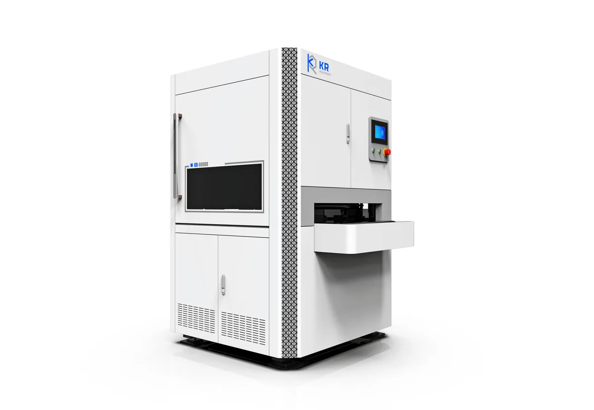
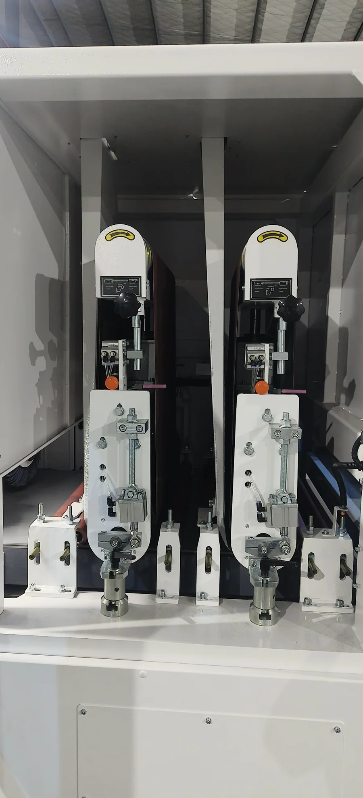

Two belts, one pass — remove big and small burrs from thick carbon steel laser and plasma cutting parts with labor-saving efficiency.

| Technical Parameter | 600BB | 1000BB | 1300BB |
|---|---|---|---|
| Max. working width | 800 mm | 1000 mm | 1300 mm |
| Workpiece thickness | 1–80 mm | 1–80 mm | 1–80 mm |
| Sanding belt size | 1900×650 mm | 1900×1020 mm | 2200×1320 mm |
| Feeding speed | 0.8–5 m/min | 0.8–5 m/min | 0.8–5 m/min |
| Total power | ~20 kW | ~22 kW | ~30 kW |
| Abrasive belt life | ≥6 hours | ≥6 hours | ≥6 hours |
High-power laser and plasma cutting on thick carbon steel leaves deep burrs and stubborn slag that single-belt machines struggle to remove. The BB series solves this with a two-belt design: a rough belt tackles the large burrs first, then a fine belt cleans up the small burrs for a smooth, consistent finish.
Rough belt removes large burrs, fine belt removes small burrs — a single feeding pass delivers a clean result.
Brand new structure improves dust collection and airflow, keeping the workspace cleaner during heavy grinding.
Feeding speed up to 5 m/min dramatically reduces manual grinding labor and boosts shop productivity.
The first rough belt removes large burrs (within 2 mm), and the second fine belt removes remaining small burrs for a smooth finish.
The BB series is optimized for thick steel (1–80 mm). For thin metal requiring chamfering, the BR series is recommended.
No — the BB series comes standard with a common table and dust collector, without an exhaust fan, keeping costs efficient.
It's the ideal mate for high-power laser cutting machines and plasma cutting machines producing thick parts with heavy burrs.
The BB series uses a rough belt and a fine belt in sequence to remove both large and small burrs without a second operation.

The BB series uses two heavy-duty abrasive belts in sequence: a rough belt first tackles large burrs from laser/plasma cutting, then a fine belt cleans up remaining small burrs for a smooth, consistent finish. Service life ≥6 hours per belt, quick-change design minimizes downtime.
 BR SERIES
BR SERIES
Dual-function machine for combined deburring and chamfering on thin and thick metal with PLC control.
View BR Series R SERIES
R SERIES
Brush rollers for chamfering and creating a beautiful surface on stainless steel, aluminum and copper.
View R Series